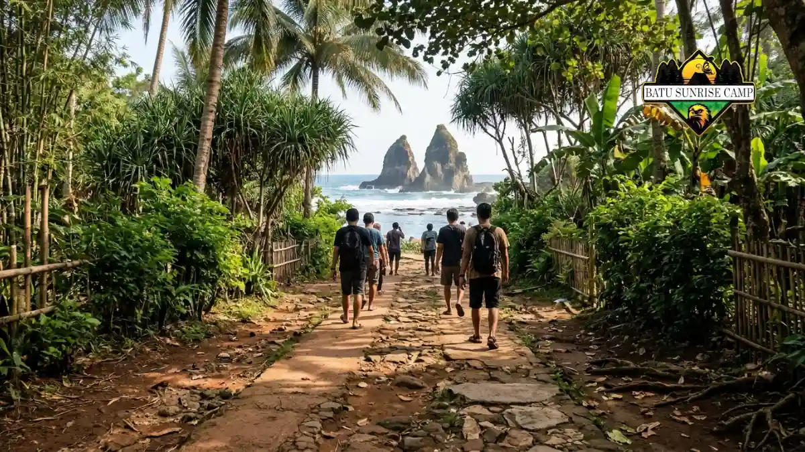

Rute menuju penginapan di Pantai Sawarna dari Jakarta dapat melalui Bogor, Cibadak, Pelabuhan Ratu, dan Cisolok atau melalui jalur barat lewat Malingping dan Bayah.
- Jalur timur dari Jakarta melewati Ciawi, Bogor, Cibadak, Pelabuhan Ratu, dan Cisolok.
- Jalur barat dari Jakarta melewati Serang atau Rangkasbitung, lalu Malingping dan Bayah.
- Dari Bandung, rute melewati Cianjur, Sukabumi, Cibadak, Pelabuhan Ratu, dan Cisolok.
- Mobil diparkir di kantong parkir desa, sedangkan akses ke Tanjung Layar memakai motor atau jalan kaki.
Bagaimana Rute dari Jakarta Menuju Sawarna?
Rute dari Jakarta menuju Sawarna tersedia dalam dua pilihan, yaitu jalur timur melalui Bogor dan Pelabuhan Ratu atau jalur barat melalui Malingping dan Bayah.
Indonesia Travel mencatat beberapa rute dari Jakarta. Jalur timur adalah Jakarta, Ciawi, Bogor, Cibadak, Pelabuhan Ratu, Cisolok, lalu Sawarna. Jalur barat memiliki beberapa variasi, misalnya Jakarta, Serang, Pandeglang, Saketi, Malingping, Bayah, lalu Sawarna, atau Jakarta, Rangkasbitung, Gunung Kencana, Malingping, Bayah, lalu Sawarna. Variasi lain melewati Cilegon, Anyer, Labuan, Malingping, dan Bayah.
Pilih jalur sesuai kebiasaan berkendara dan kondisi jalan. RRI Banten pada April 2025 memberitakan bahwa BUMDes Sawarna menyoroti jalan rusak menuju Sawarna.
Karena kondisi jalan dapat berubah, periksa informasi terbaru sebelum berangkat. Bandara terdekat adalah Soekarno-Hatta, sekitar 217 kilometer dari salah satu penginapan di Sawarna menurut listing Tiket.com.
Bagaimana Rute dari Bandung Menuju Sawarna?
Rute dari Bandung menuju Sawarna melewati Cianjur, Sukabumi, Cibadak, Pelabuhan Ratu, dan Cisolok sebelum tiba di Desa Sawarna, Kecamatan Bayah, Kabupaten Lebak.
Indonesia Travel mencatat rute tersebut sebagai jalur umum dari Bandung. Perjalanan melintasi beberapa kota sehingga rencanakan titik istirahat dan pengisian bahan bakar di sepanjang jalan. Waktu tempuh dapat berbeda tergantung lalu lintas dan kondisi jalan.
Jika berangkat dari Bandung pada hari libur, pertimbangkan berangkat lebih pagi agar tidak terjebak kepadatan di jalur kota yang dilalui. Isi bahan bakar sebelum memasuki ruas yang lebih sepi, dan simpan nomor kontak penginapan agar mudah dihubungi bila Anda tersesat atau terlambat tiba.
Jika Anda berencana menginap, hubungi penginapan terlebih dahulu untuk menanyakan jam check-in dan petunjuk arah terakhir.
Hal ini penting karena ketentuan akses dalam desa dapat berbeda untuk motor dan mobil. Gambaran lengkap pilihan akomodasi tersedia pada penginapan murah di Pantai Sawarna.

Akses menuju Pantai Tanjung Layar dari kantong parkir desa Sawarna hanya dapat dilalui dengan sepeda motor atau berjalan kaki santai sekitar 30 menit.
Bagaimana Akses dari Parkir ke Pantai dan Penginapan?
Mobil harus diparkir di kantong parkir desa Sawarna, sedangkan Pantai Tanjung Layar hanya dapat dicapai dengan motor atau berjalan kaki sekitar 30 menit.
Good News From Indonesia pada Mei 2026 menyebut bahwa setibanya di pusat Desa Sawarna, kendaraan roda empat harus diparkir di kantong parkir utama.
Perjalanan darat menuju titik pantai Tanjung Layar memerlukan sekitar 30 menit dengan berjalan kaki menyusuri jalan setapak di antara pohon kelapa. Kawasan pantai terbuka 24 jam, sehingga wisatawan dapat berkemah atau mengambil foto malam hari.
Tiket masuk kawasan tercatat Rp5.000 per orang dan sudah mencakup akses ke Pantai Pasir Putih Ciantir.
Tanyakan kepada pengelola penginapan apakah tersedia jasa antar motor dari kantong parkir. Rincian anggaran transportasi lokal dapat Anda cek pada biaya menginap di Pantai Sawarna.
Objek Wisata Apa Saja yang Dekat dengan Penginapan di Sawarna?
Objek wisata dekat penginapan di Sawarna meliputi Pantai Tanjung Layar, Pasir Putih Ciantir, Legon Pari, Karang Taraje, Pulo Manuk, serta Goa Lalay dan Curug Cisujen.
Indonesia Travel menyebut kawasan Sawarna terdiri atas pantai, gua, air terjun, dan perbukitan. Pantai yang tercatat antara lain Pasir Putih Ciantir, Tanjung Layar, Legon Pari, Karang Taraje, dan Pulo Manuk.
Gua yang tersedia meliputi Goa Lalay, Goa Langir, dan Goa Seribu Candi, sedangkan titik pandang mencakup Puncak Cariang, Bukit Senyum, dan Muara Tiga. Curug Cisujen juga termasuk destinasi di desa ini.
Daftar ini bukan urutan prioritas, sehingga Anda perlu menyesuaikannya dengan waktu yang tersedia. Pilih penginapan yang dekat dengan objek yang menjadi prioritas Anda.
Pecinta pantai dapat memilih area dekat Tanjung Layar dan Ciantir, sedangkan penjelajah gua dapat memilih area yang mudah menuju gua.
Ingat bahwa beberapa pantai memiliki pos tiket tersendiri, seperti Pulo Manuk Rp10.000 dan Karang Bokor Rp20.000 menurut Good News From Indonesia pada Januari 2026.
Apa yang Perlu Disiapkan Sebelum Berangkat?
Persiapan sebelum berangkat ke Sawarna meliputi cek cuaca dan gelombang, kondisi jalan, reservasi penginapan, uang tunai, alas kaki nyaman, serta perlengkapan pelindung dari matahari.
Indonesia Travel menyarankan alas kaki nyaman untuk area pantai dan batu karang, serta topi, tabir surya, dan air minum. Perhatikan juga keselamatan laut.
BPBD Kabupaten Lebak pada April 2025 mengimbau wisatawan agar tidak berenang di pantai saat gelombang tinggi, dan Basarnas Banten saat itu menerima laporan wisatawan terseret ombak di Pantai Goa Langir.
Pastikan reservasi penginapan sudah terkonfirmasi, terutama saat libur panjang. Bawa uang tunai untuk parkir dan tiket. Pelajari juga cara memilih penginapan di Pantai Sawarna agar lokasi penginapan sejalan dengan rute Anda.
Kesimpulan
Rute menuju penginapan di Pantai Sawarna dari Jakarta dan Bandung umumnya melewati Pelabuhan Ratu dan Cisolok, dengan alternatif jalur barat dari Jakarta lewat Malingping.
- Pilih jalur timur atau barat sesuai asal perjalanan dan kondisi jalan terbaru.
- Parkirkan mobil di kantong parkir desa dan siapkan motor atau jalan kaki menuju Tanjung Layar.
- Pilih penginapan yang dekat dengan objek wisata prioritas.
- Periksa peringatan gelombang sebelum beraktivitas di pantai.
Informasi rute bersifat umum dan dapat berubah, sehingga konfirmasikan petunjuk terbaru kepada pengelola penginapan.

Pertanyaan yang sering diajukan (FAQ)